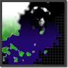
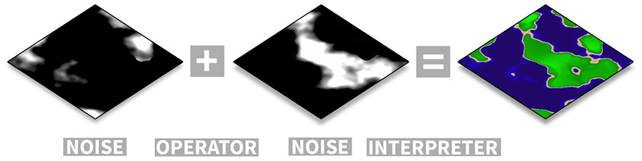
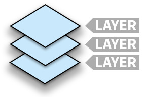
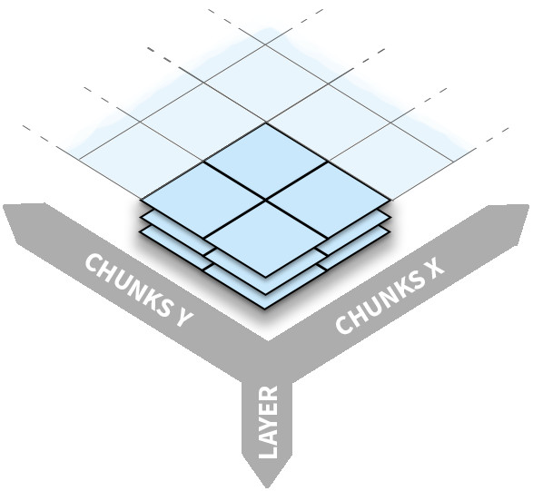

Opus prototype
procedural world generation
interpreter
layer
modifier
overview
sampler
Opus prototype is a tool to generate infinite landscapes by combining noise artifacts. You can use the
editor to create a world and use the library to import it to your own application. Opus prototype
offers you a way to easily describe landscapes (like seen in Minecraft) with values that are based on
pseudo random noise algorithms.
Layer

A layer is a combination of noise values. The values are combined with operators. The result value is
interpreted as a color using an interpreter.
Chunk

A chunk is a stack of layers. It has a position in a grid of chunks.
World

The world is a combination of chunks in two directions.
Links
blog.runevision.com
An article about the functional-, simulating- and planing -strategy for procedural world generation.
fractal terrain generation
ridgednoise editor
redblobgames by